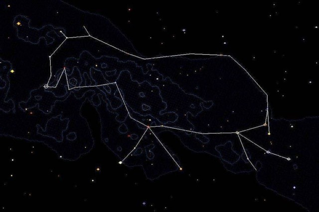
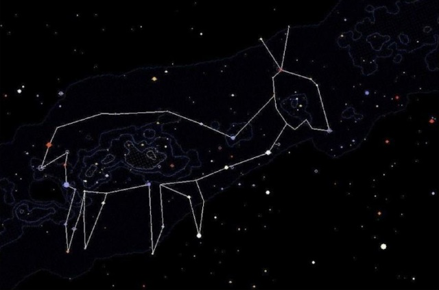
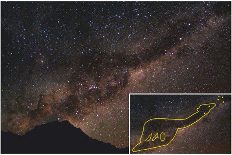

Tupi-Guarani · Inverno
Ema Celeste
A Ema ajuda a compreender as mensagens da natureza e a manter o equilíbrio da comunidade.
Galeria celeste
Clique em uma constelação para conhecer sua história. Use os filtros para explorar por cultura.
A Ema ajuda a compreender as mensagens da natureza e a manter o equilíbrio da comunidade.

Ancestral que caminha pelo céu marcando o verão.

A Anta celeste relembra histórias de acontecimentos míticos e ajuda a organizar a vida social e econômica da aldeia.

Visto como um ser que ensina prudência e respeito aos recursos naturais, sua presença no céu reforça a ideia de que o ser humano deve viver em equilíbrio com os demais seres vivos.

A ponte entre os três mundos: céu, terra e subterrâneo.

A lhama escura que bebe água dos oceanos.
Saber Tupi-Guarani
Quatro figuras que marcam o ciclo do ano para os povos Tupi-Guarani.
Surge na segunda quinzena de setembro, caminhando pela Via Láctea.
Touro + Órion ao anoitecer, anunciando as chuvas e o plantio.
Aparece em março, entre Cruzeiro do Sul, Vela, Carina e Centauro.
Visível em junho, entre o Cruzeiro do Sul e o Escorpião.